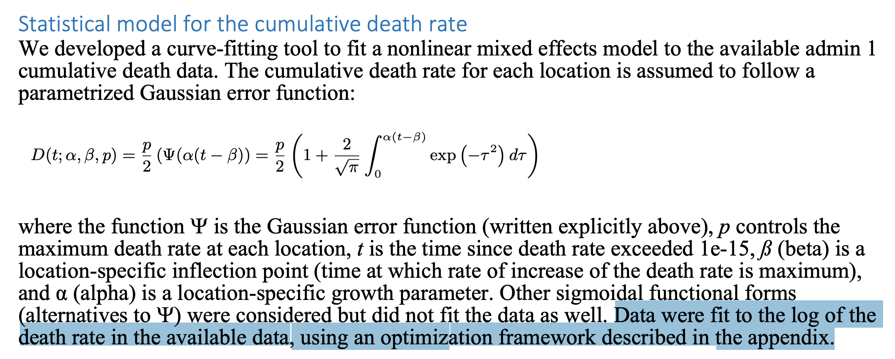

2023-04-19 Differential Equations
Contents
2023-04-19 Differential Equations#
Last time#
Singular integrals and Tanh-Sinh quadrature
Finite element integration and mapped elements
Integration in multiple dimensions
Today#
Notes on integration
Ordinary differential equations (ODE)
Explicit methods for solving ODE
Stability
using LinearAlgebra
using Plots
default(linewidth=4, legendfontsize=12)
struct RKTable
A::Matrix
b::Vector
c::Vector
function RKTable(A, b)
s = length(b)
A = reshape(A, s, s)
c = vec(sum(A, dims=2))
new(A, b, c)
end
end
function rk_stability(z, rk)
s = length(rk.b)
1 + z * rk.b' * ((I - z*rk.A) \ ones(s))
end
rk4 = RKTable([0 0 0 0; .5 0 0 0; 0 .5 0 0; 0 0 1 0], [1, 2, 2, 1] / 6)
heun = RKTable([0 0; 1 0], [.5, .5])
Rz_theta(z, theta) = (1 + (1 - theta)*z) / (1 - theta*z)
function ode_rk_explicit(f, u0; tfinal=1, h=0.1, table=rk4)
u = copy(u0)
t = 0.
n, s = length(u), length(table.c)
fY = zeros(n, s)
thist = [t]
uhist = [u0]
while t < tfinal
tnext = min(t+h, tfinal)
h = tnext - t
for i in 1:s
ti = t + h * table.c[i]
Yi = u + h * sum(fY[:,1:i-1] * table.A[i,1:i-1], dims=2)
fY[:,i] = f(ti, Yi)
end
u += h * fY * table.b
t = tnext
push!(thist, t)
push!(uhist, u)
end
thist, hcat(uhist...)
end
ode_rk_explicit (generic function with 1 method)
Notes on integration#
Transforms can make the integrand smooth
Transforms can make the domain shape more convenient
Adaptive integration
Curse of dimensionality
Sparse grids (Smolyak quadrature)
Adaptive randomized methods (Markov Chain Monte Carlo)
High-dimensional integrals#
Suppose we have a joint probability density \(p(x; y)\).
Perhaps it’s the probability of getting \(x\) inches of snow, where \(y\) represents known and unknown quantities (location, season, wind direction, El Niño year).
The marginal distribution \(p(x)\) allows us to incorporate knowledge (and uncertainty) of \(y\) to make a distribution over only \(x\).
Curve ball: we aren’t given \(p(x;y)\) or \(p_Y(y)\), but we can use data and models to sample those distributions.
Ordinary Differential Equations#
Given initial condition \(y_0 = y(t=0)\), find \(y(t)\) for \(t > 0\) that satisfies
Application |
\(y\) |
\(f\) |
|---|---|---|
Orbital dynamics |
position, momentum |
conservation of momentum |
Chemical reactions |
concentration |
conservation of atoms |
Epidemiology |
infected/recovered population |
transmission and recovery |
\(y\) can be a scalar or a vector
Why a causal model?#
How was IHME making predictions in March/April 2020?#


26. Here's an interesting example of the perversity of the curve-fit.
— Carl T. Bergstrom (@CT_Bergstrom) April 15, 2020
The model has been consistently underestimating deaths in Spain. But it has to match the back side of the curve to the front side. To do that it has to *steepen* the downward trajectory. pic.twitter.com/LzKRDv9BoO
Solving differential equations#
Linear equations#
Autonomous if \(A(t) = A\) and source independent of \(t\)
Suppose \(y\) and \(a = A\) are scalars: \(y(t) = e^{at} y_0\)
Can do the same for systems#
What does it mean to exponentiate a matrix?#
Taylor series!
and there are many practical ways to compute it.
Question#
Suppose that the diagonalization \(A = X \Lambda X^{-1}\) exists and derive a finite expression for the matrix exponential using the scalar exp function.
Forward Euler Method#
The simplest method for solving \(y'(t) = f(t,y)\) is to use numerical differentiation to write
function ode_euler(f, y0; tfinal=10., h=0.1)
y = copy(y0)
t = 0.
thist = [t]
yhist = [y0]
while t < tfinal
tnext = min(t+h, tfinal)
h = tnext - t
y += h * f(t, y)
t = tnext
push!(thist, t)
push!(yhist, y)
end
thist, hcat(yhist...)
end
ode_euler (generic function with 1 method)
f1(t, y; k=5) = -k * (y .- cos(t))
thist, yhist = ode_euler(f1, [1.], tfinal=10, h=.25)
scatter(thist, yhist[1,:])
plot!(cos)

Forward Euler on a linear system#
f2(t, y) = [0 1; -1 0] * y
thist, yhist = ode_euler(f2, [0., 1], h=.02, tfinal=10)
scatter(thist, yhist')
plot!([cos, sin])
eigen([0 1; -1 0])
Eigen{ComplexF64, ComplexF64, Matrix{ComplexF64}, Vector{ComplexF64}}
values:
2-element Vector{ComplexF64}:
0.0 - 1.0im
0.0 + 1.0im
vectors:
2×2 Matrix{ComplexF64}:
0.707107-0.0im 0.707107+0.0im
0.0-0.707107im 0.0+0.707107im
Runge-Kutta 4#
thist, yhist = ode_rk_explicit(f2, [0., 1], h=1, tfinal=10)
scatter(thist, yhist')
plot!([cos, sin], size=(800, 500))
Apparently it is possible to integrate this system using large time steps.
This method evaluates \(f(y)\) four times per stepso the cost is about equal when the step size \(h\) is 4x larger than forward Euler.
Linear Stability Analysis#
Why did Euler diverge (even if slowly) while RK4 solved this problem accurately? And why do both methods diverge if the step size is too large? We can understand the convergence of methods by analyzing the test problem
function plot_stability(Rz, method; xlim=(-3, 2), ylim=(-1.5, 1.5))
x = xlim[1]:.02:xlim[2]
y = ylim[1]:.02:ylim[2]
plot(title="Stability: $method", aspect_ratio=:equal, xlim=xlim, ylim=ylim)
heatmap!(x, y, (x, y) -> abs(Rz(x + 1im*y)), c=:bwr, clims=(0, 2))
plot!(x->0, color=:black, linewidth=1, label=:none)
plot!([0, 0], [ylim...], color=:black, linewidth=1, label=:none)
end
plot_stability (generic function with 1 method)
plot_stability(z -> 1 + z, "Forward Eulor")
Stability for RK4#
plot_stability(z -> rk_stability(4z, rk4), "RK4")
plot_stability(z -> rk_stability(2z, heun), "Heun's method")
Implicit methods#
Recall that forward Euler is the step
plot_stability(z -> 1/(1-z), "Backward Euler")
Computing with implicit methods#
Linear solve for linear problem
Nonlinear (often Newton) solve for nonlinear problem
Need Jacobian or finite differencing
plot_stability(z -> Rz_theta(z, .5), "Midpoint method")